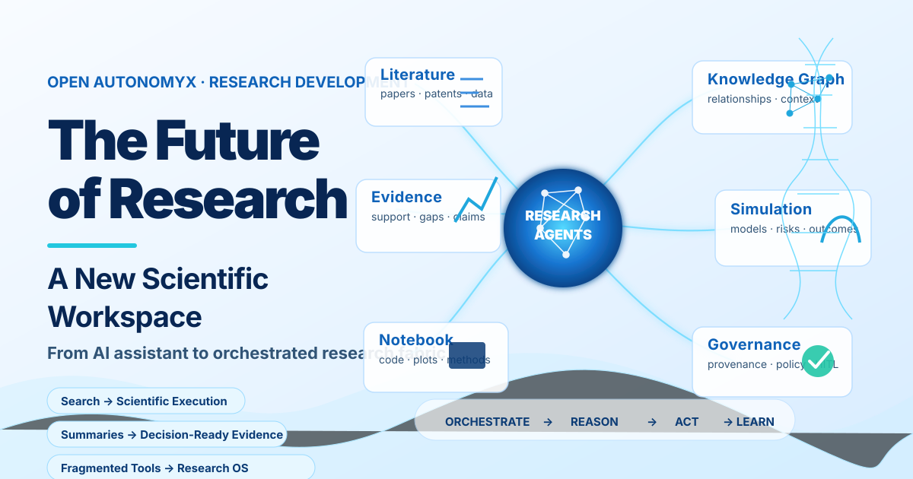

Agentic Research as a Scientific Fabric
Agentic research should not be treated as a feature. It should be treated as a fabric.

A scientific fabric is a governed execution layer where people, agents, models, datasets, tools, notebooks, evidence, policies, and decisions operate as one connected system. It is not a chat window placed on top of research. It is a new operating surface for scientific work.
The reference scenario describes this clearly: a scientist begins with a question, and the workspace revives prior context, gathers literature and datasets, invokes specialist agents, generates notebooks, tracks collaboration, checks compliance, and produces an end-of-day research summary. The core workflow spans hypothesis, planning, retrieval, reasoning, simulation, validation, and communication.
For AGenNext, this maps directly to a Fabric-native architecture.
The scientist’s question becomes an objective. The objective becomes a plan. The plan becomes a set of governed agent tasks.
Each task produces evidence. Each evidence object carries provenance. Each decision point passes through policy, evaluation, and human approval. Each output becomes replayable, inspectable, and reusable.
This is the difference between an AI assistant and an agentic research fabric.
An assistant answers. A fabric coordinates. An assistant summarizes. A fabric preserves context. An assistant generates text. A fabric generates evidence-backed artifacts. An assistant may help a scientist move faster. A fabric helps the organization make better scientific decisions repeatedly.
Core Fabric Primitives
A production-grade agentic research system needs a small set of durable primitives.
- Objective: The scientific question or research goal being pursued.
- Context: The revived memory of prior work, datasets, literature, assumptions, discussions, and constraints.
- Agent: A specialist executor with a bounded role, such as retrieval, enrichment, simulation, risk analysis, cohort visualization, compliance, or reporting.
- Tool: A callable capability such as literature search, GEO dataset retrieval, docking simulation, notebook execution, pathway analysis, or citation generation.
- Evidence: Any source, dataset, result, figure, claim, contradiction, or model output used to support or weaken a conclusion.
- Policy: The governance layer that controls permissions, data usage, compliance, risk thresholds, and approval gates.
- Notebook: The executable surface where reasoning, code, plots, methods, and outputs are captured.
- Decision: A position taken by the research team, including support, contradictions, uncertainty, and next actions.
- Artifact: The report, memo, slide deck, dataset snapshot, notebook, or review package produced from the workflow.
The Agentic Research Loop
The Fabric loop can be expressed as:
This loop is not linear in practice. It is recursive. A contradiction may return the workflow to retrieval. A failed simulation may revise the hypothesis. A compliance flag may pause execution. A human reviewer may approve, reject, or redirect the workflow. A new dataset may reopen a prior decision.
That is why agentic research requires orchestration, not just generation.
Governance by Design
The most important feature of a scientific fabric is not autonomy. It is governed autonomy.
Every agent must know its boundary. Every tool call must be traceable. Every dataset must carry usage rights. Every model output must be versioned. Every claim must connect back to evidence. Every high-impact decision must have a human gate.
This is especially important in life sciences, where research decisions can affect clinical programs, patient safety, regulatory submissions, and investment allocation.
A Fabric-native agentic research platform must therefore include identity for every human, agent, tool, dataset, and artifact; policy enforcement before execution; provenance for every claim and transformation; audit trails for every decision; reproducible notebooks; model and tool version tracking; evidence graphs; human-in-the-loop approval gates; and evaluation loops for output quality.
Without these controls, agentic research becomes another black box. With them, it becomes a trusted execution layer for scientific work.
Why This Matters
Scientific organizations do not only need faster answers. They need decision-quality evidence.
A useful agentic research workflow must show: what is the current conclusion, what evidence supports it, what evidence contradicts it, what assumptions were made, which datasets were used, which tools were executed, which risks remain, what would change the conclusion, and what should happen next.
This is the standard for decision-ready science.
The future research workspace will not simply retrieve papers or summarize datasets. It will coordinate inquiry itself. It will help scientists move from question to evidence, from evidence to decision, and from decision to reproducible action.
That is the opportunity for AGenNext: to build the scientific fabric where agentic research becomes governed, repeatable, auditable, and useful.
Not just AI for research. A research operating system.